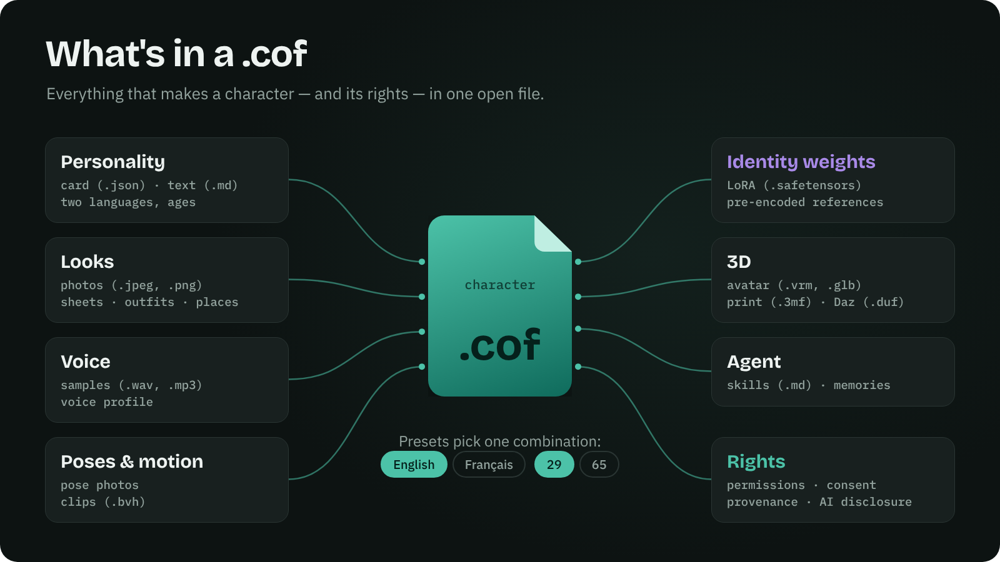
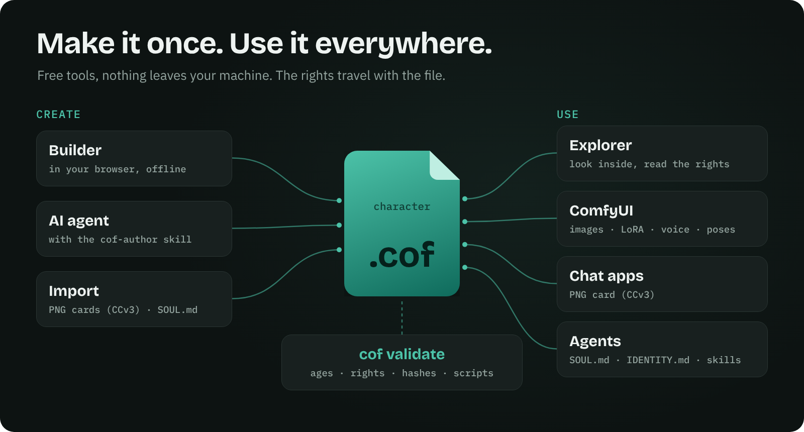

COF
Character Open File — complete AI characters
in one open file, with their rights.
An open file format that bundles everything that defines an AI character — personality, looks, voice, 3D, motion, agent skills and memories — with its rights and consent built in. The same file opens in a chat app, an image generator, ComfyUI, a game engine or an agent.
What's in a .cof

Make it once. Use it everywhere.
